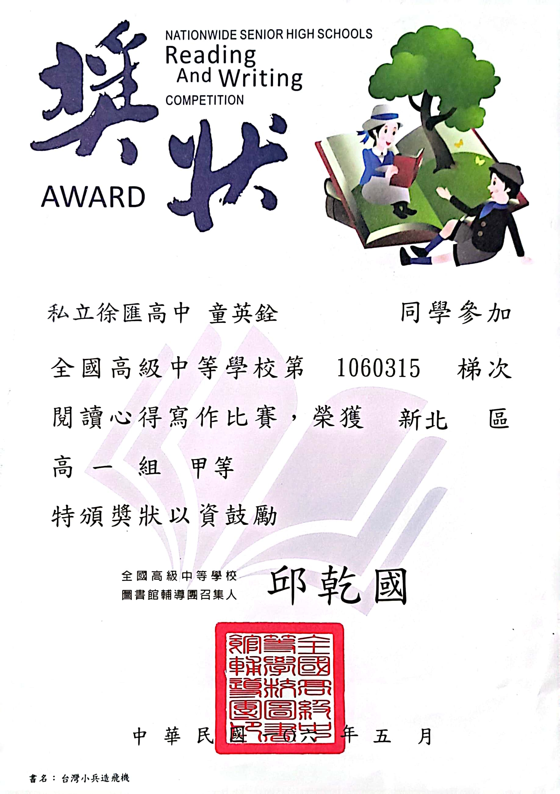
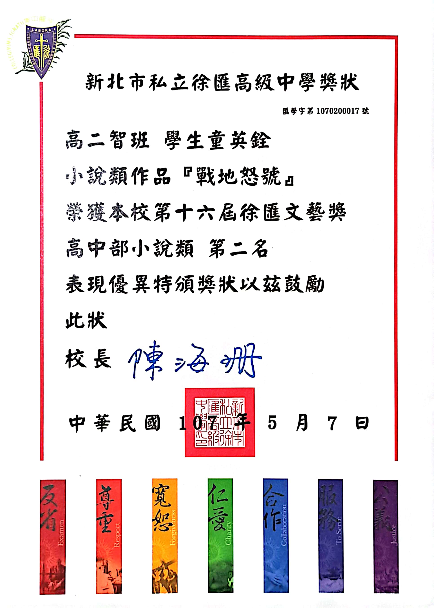
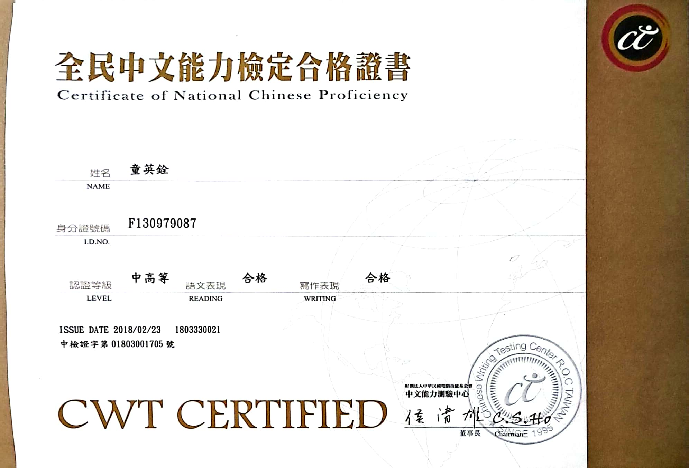
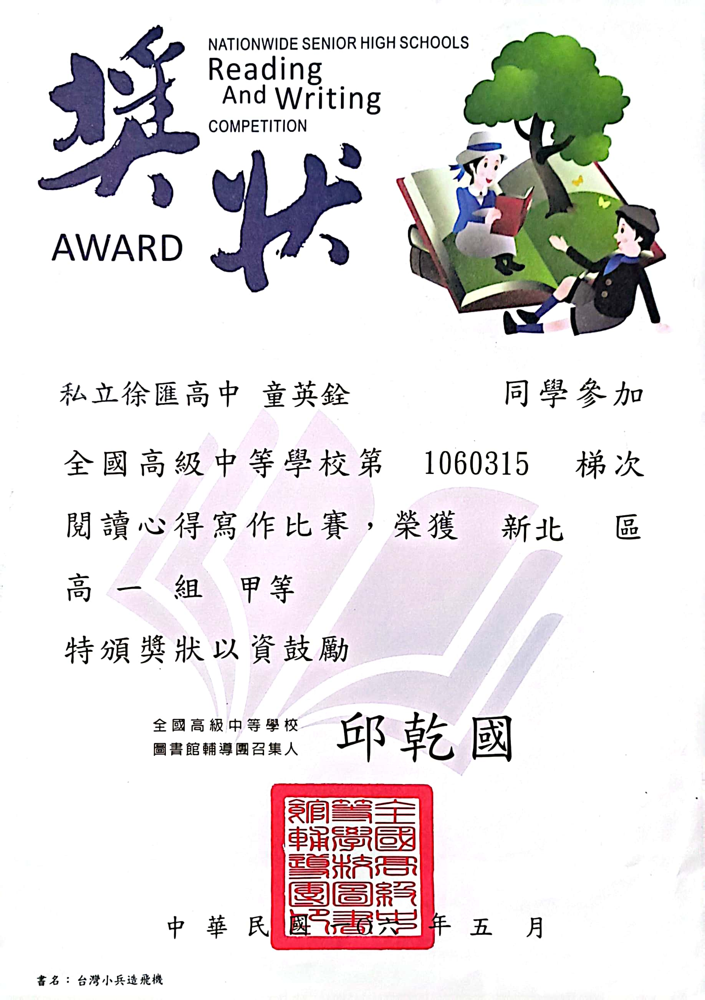
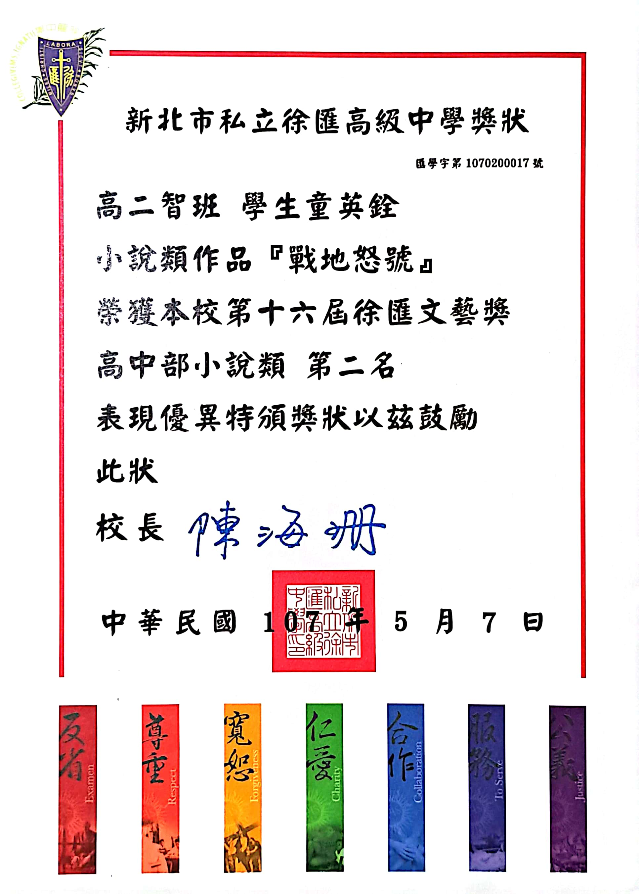
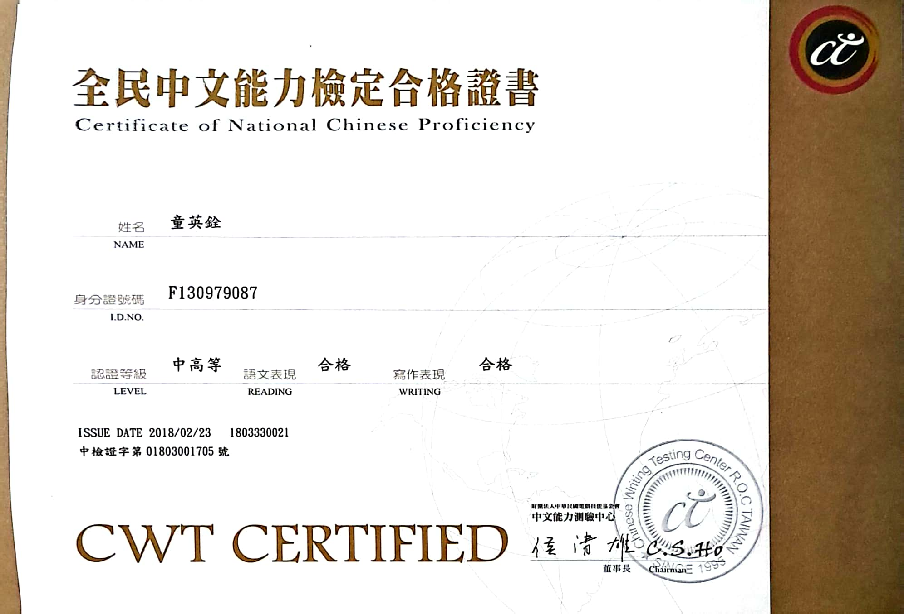
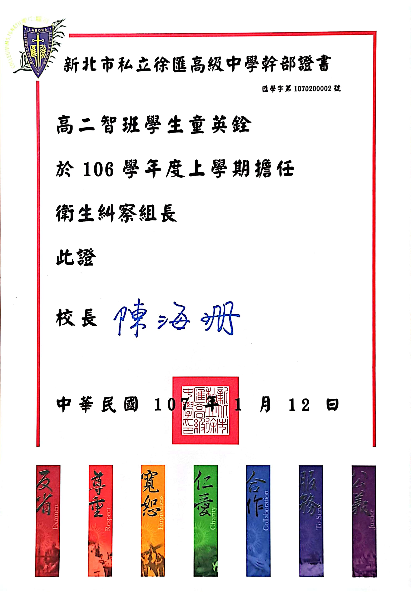
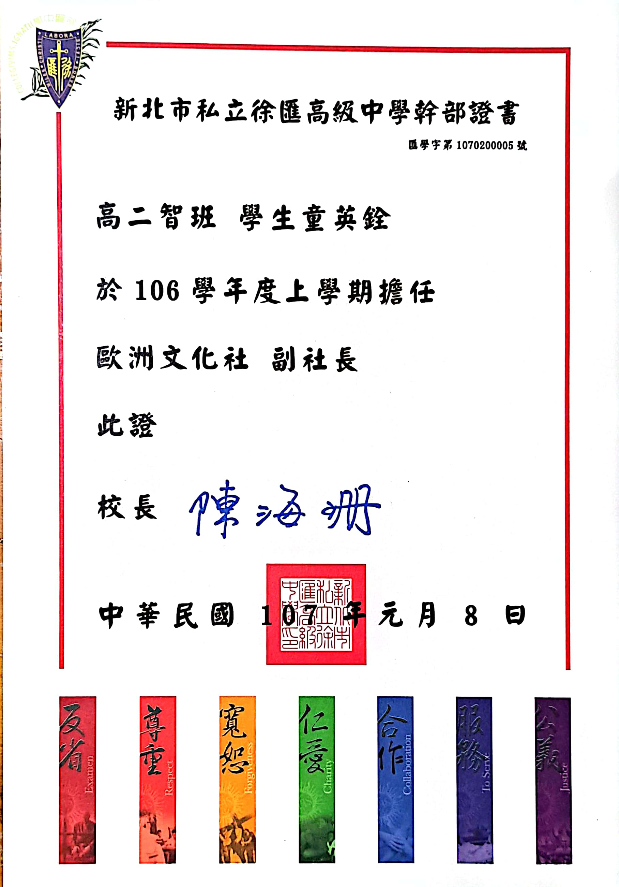
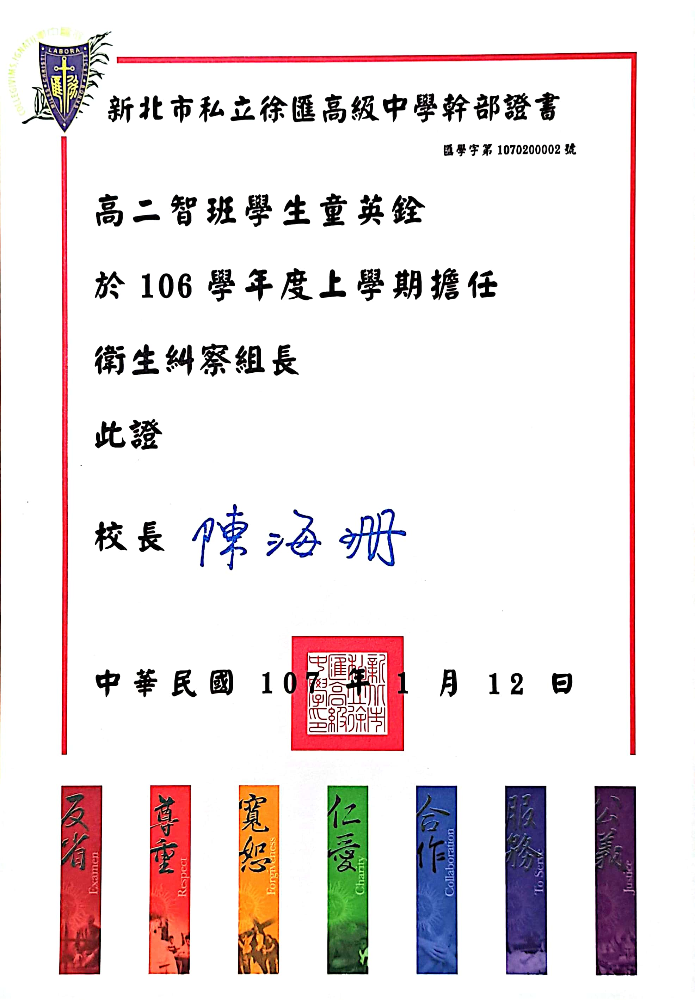
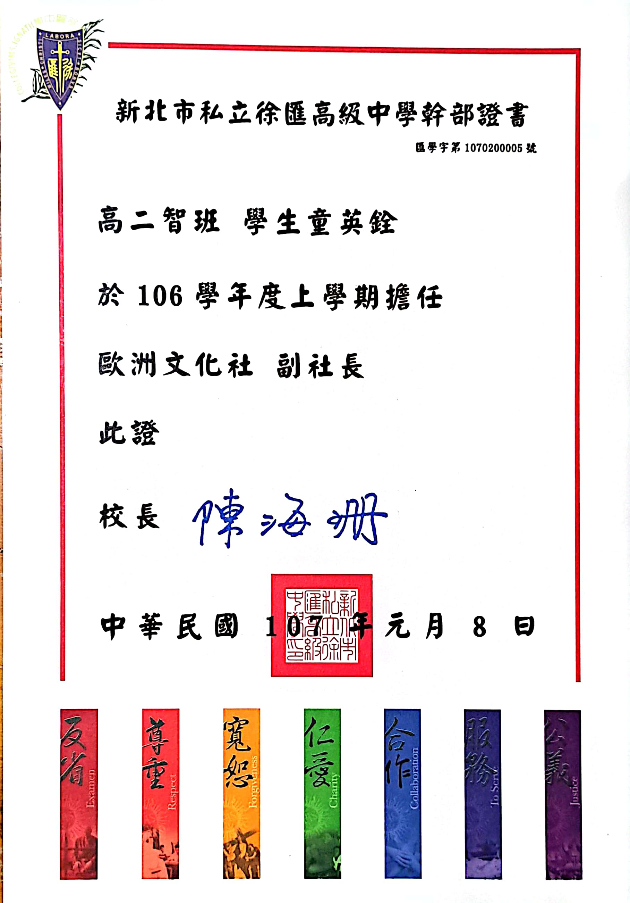

個人資訊

姓名：童英銓
英文名字：Ying-Chuan Tung / Douglas Tung
系級：工業與系統工程學系
輔系：資訊管理系
學程：公共行政學程、法律與心理學程、資通安全學程
生日：2001年5月22日
血型：A
年齡：22(應該吧)
國籍：ROC
出生地：新北市
興趣：看職棒、聽音樂、看youtube、打電動
支持球隊：中信兄弟
喜愛運動：棒球
經典名言：在戰爭與屈辱面前，你選擇了屈辱！可是，屈辱過後，你仍得面對戰爭！
We shall defend our Island, whatever the cost may be, we shall fight on the beaches, we shall fight on the landing grounds, we shall fight in the fields and in the streets, we shall fight in the hills; we shall never surrender.
專業與技能
上方是程式能力的部分，由於我較晚修輔系，所以我程式語言只會系上所教的，而我在系上學的是C語言，
所以我的程式編寫技術基本上只有C語言，剩下的就是尚未有基礎只學個大概的JSP、HTML及JAVA，所以在上圖橙紫色部分即為C語言，剩下的部分就是JSP、JAVA與HTML，未來會在輔系修完所有程式語言的課程，讓自己程式編撰力最大化；而
下面是本科所主修的課程，由所學程度來進行排名。
 





- 工作研究 95%
- 人因工程 90%
- 經濟學(含工程經濟) 88%
- 生產管理 80%
- 作業研究 75%
- 品質管制 73%
- 設施規劃 73%
獲獎
- 台北市童軍會 專科章消防 合格
- 台北市童軍會 專科章社區公民 合格
- 國中英文微電影製作 佳作
- 高中文藝獎 高中小說類 第二名
- 全國高級中學閱讀心得寫作比賽 甲等
- 全民中文能力檢定 中高等合格
個人經歷
打工實習
去年暑假，由於系上要求大三升大四的人必須去實習，於是我踏上實習的旅程，我來到一家生產電腦周邊的工廠來實習，每天我在裡面的工作就是負責檢測生產出來的產品是否為瑕疵品，當然同時透過工作的時候，了解工廠內部運作，我個人認為這算是能連結到系上所學。當然在裡面所收穫的，並不只有這些，尤其是職場經驗，因為我們是實習生，所以有時候觸犯職場規則會有人跟我們講，我認為這蠻重要的，畢竟未來如果真出社會，可就沒有犯錯空間。當然最後一樣收穫最重要，那就是---錢！之後在去年年底，我開始在全家便利超商打工，在裡面也是學會很多，比如：如何讓自己工作起來更輕鬆、如何與顧客溝通、要如何幫助顧客以解決他們的困難…之類。
幹部生涯
我在大學時期沒擔任過什麼幹部，不過在國高中時期還蠻常的，不論是班級性的、社團性的還是學校性的。我擔任最久的幹部職位是學校的衛生糾察，我從國三一路當到高三畢業，由於我的高中是一所綜合高中，裡面有高中也有國中，我當時就是一路從國中讀到高中都在同一所，整整六年。衛生糾察佔了我中學生涯的三分之二，它見證了我從當時的國中屁孩，蛻變成大學新鮮人，衛生糾察這個職位，的確教會了我很多，從最早學會的細心負責有擔當，到後面要如何圓滑的處理事情，如何處理突發狀況…這些，我擔任這職位，從最初的組員，一直擔任到隊長，如果問我，我在青蔥歲月印象最深的是什麼？我會毫不猶豫的回答，擔任衛生糾察的點點滴滴。
 



ROTC生涯
ROTC中文全名是大學儲備軍官訓練團，我在大二上加入，大二下開始受訓。在受訓過程中，都能一直感受到那肅穆氣氛的存在，也是因為整套訓練，讓我了解到何謂軍人，也讓我了解到何謂軍人的天職。當時在錄取過後，寒假就要到陸軍官校，接受為期一周的調適訓練，在整個訓練過程中，對於軍人的職責、本分、紀律…等等都有一定的認識。在調適教育結束後，開學之後每個禮拜六都要到教育中心去上課，早上上英文、孫子兵法、基本軍紀教育…等等，下午就體能訓練、儀態訓練等等，後來在大三因課業因素決定退訓，但不可否認的是ROTC生涯給我留下非常深刻的印象。

社群小編
去年暑假，我有一天在收看職棒轉播賽事，比賽結束後，我突然心血來潮，寫了一篇關於當天比賽的評論，寫完之後放在運動視界上面，同時也轉發給一位長期關注日職並在一個棒球社群上擔任寫手的朋友，他看完後當即給我一些建議，並將我的文章給群主看，群主看完當即透過那位朋友詢問我是否願意加入團隊來共同創作。我考慮一下，我決定加入他們，畢竟文章不能自己看爽就好，一個再好的文章，如果一直沒有流量，沒有人觀看，那也只是垃圾一個而已，況且我也希望我能通過我自己的看法，進而得到別人的討論，別人的想法，就這樣，我加入了社群，開設〈坦克聊野球〉專欄。從加入到現在，也寫了三篇文章，由於這學期蠻忙的，就沒甚麼創作出來。
(點擊這裡以進入Sportsv觀賞我的文章，或者點擊下列標籤直接開啟文章)